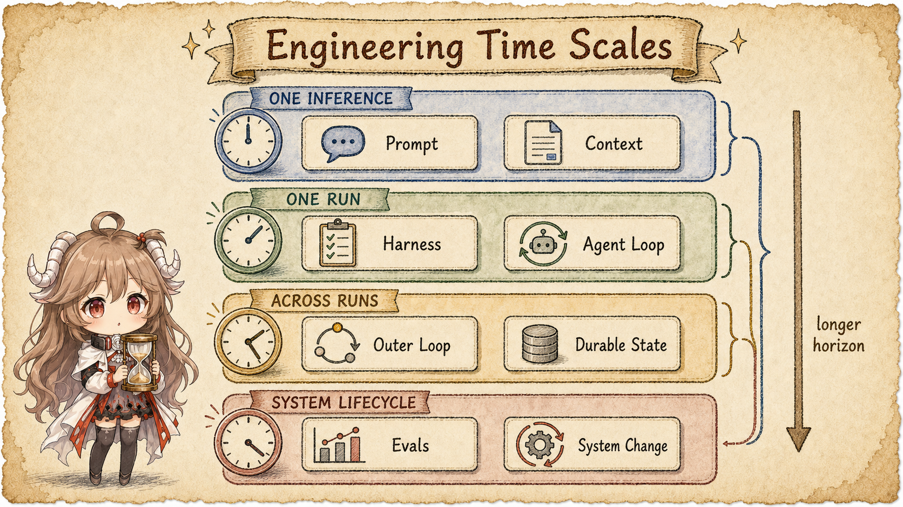
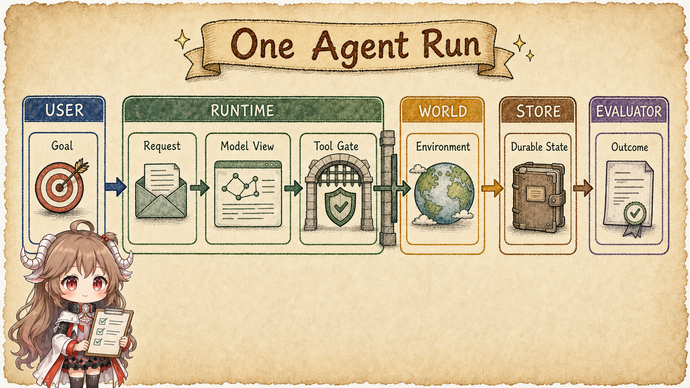
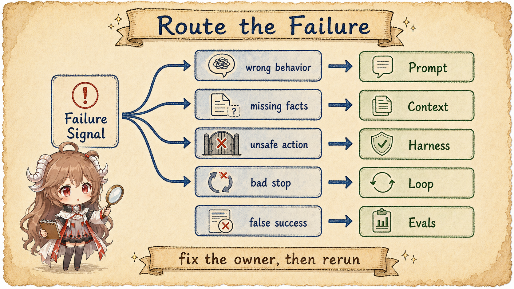

Consider a small-sounding task: “Fix the failing payment test, validate the change, and leave it ready for review.” A model needs a clear goal, but wording alone does not supply repository facts. A huge context window does not grant controlled execution. A complete tool set does not guarantee that the run stops at the right time. One successful run says nothing about the next trigger, failure recovery, or regression detection.
If every failure is a prompt problem, we keep rewriting prose. If every piece of information is context, we forget who selected it. If everything outside the model is a harness, the term stops helping us design. This first part establishes the map; the next six parts magnify one surface at a time.
Reading contract
- This part answers: which responsibility each surface owns, and how to route a failure along one task.
- It does not claim: access to hidden vendor implementations or a settled industry vocabulary.
- Exit check: you should be able to classify a failure as behavior, evidence, runtime, run convergence, cross-run orchestration, or outcome truth.
Evidence boundary
This article cites only official public material from OpenAI and Anthropic. Their use of terms such as harness is not identical, so we show the public usages before choosing an operational definition for this series. The diagrams and JSON are conceptual shapes, not reconstructions of private systems.
1. Replace the upgrade timeline with engineering coordinates
The useful difference is not when a term became fashionable. It is which boundary it controls and how long that control lasts. Prompt and context directly shape an inference. The harness and agent loop sustain a run. The outer loop connects runs into work. Evals span system versions and tell us whether a change improved outcomes.

| Surface | Operational definition in this series | Primary time scale | Typical failure |
|---|---|---|---|
| Prompt | The behavioral contract: role, goal, constraints, precedence, output, and tool semantics. | Behavior for an inference | Ambiguous intent, conflicting rules, output drift |
| Context | The working set actually visible to and usable by the model in one call. | Reassembled per inference | Missing, noisy, stale, or poorly placed evidence |
| Runtime harness | The execution environment and control plane outside the model that carries a run. | One run | Uncontrolled effects, broken state, no recovery |
| Agent loop | Repeat reasoning, action, and observation until an exit condition is met. | One turn or run | Premature stop, spinning, exhausted budget |
| Outer loop | Trigger, select, verify, persist, retry, and escalate across runs. | Multiple runs | Duplicate work, lost state, retry storms |
| Evals | Repeatable outcome truth and feedback for system change. | System lifecycle | Treating “the agent said done” as done |
These are not mutually exclusive job titles. One change can touch prompt, context policy, and harness. A review still needs to name each surface; otherwise improvement cannot be attributed and regressions cannot be localized.
2. Follow one fix through its owners
Expand the test-fix task and five owner classes appear. The user owns the goal and definition of done. The runtime assembles the request, model view, and tool gates. The world contains the repository and test process. A store retains facts across turns. An evaluator decides whether the outcome is real. The model matters, but it is not the only state machine.

2.1 Turn a goal into verifiable done
“Fix the test” gives direction but no boundary. May production code change? Which commands must pass? Is network access allowed? What evidence should a reviewer receive? The prompt surface expresses those requirements as behavior. The eval surface turns some of them into checks. They meet at the goal, but they are not the same mechanism.
2.2 Project stored material into one model call
OpenAI’s official prompt engineering guide discusses high-level instructions, message roles, tools, and input as parts of request design. Anthropic’s context engineering article emphasizes that an agent chooses what belongs in the next inference at every step. A useful conceptual request shape is:
{
"instructions": "Fix the failing payment test; do not change public APIs.",
"tools": ["read_file", "search", "apply_patch", "run_tests"],
"input": [
{ "type": "task", "text": "..." },
{ "type": "repo_facts", "ref": "selected working set" }
]
}A repository may store ten thousand facts, but only selected and serialized material in the current request is model-visible context. Instructions also consume the context window. Prompt is a semantic layer cut by responsibility; context is a physical working set cut by visibility. They overlap, but they are not substitutes.
2.3 A tool call is a proposal; the harness executes the effect
When a model emits “run the tests” or a structured tool call, no process has to start automatically. A harness validates schemas, checks permission, runs inside a sandbox, applies timeouts and cancellation, truncates results, records events, and returns an observation. It turns an untrusted proposal into a controlled effect.
Official usage varies in scope. OpenAI’s Harness engineering discusses the Codex harness as the core agent loop plus its tool and instruction environment. Anthropic’s Building and evaluating trustworthy agents stresses the instructions and guardrails that form a harness, while Managed agents separates session, harness, and sandbox. For sharper reviews, this series uses a narrower definition: the runtime harness is the execution and control plane outside the model and inside one run; the loop is the control flow that advances state within it.
3. Design the inner and outer loops separately
OpenAI’s public walk-through of the Codex agent loop shows a single-run path: prepare input, call the model, receive events, execute tools, return results, and continue until completion or interruption. Anthropic’s Building effective agents likewise describes agents as systems where models dynamically direct their own processes and tool use. This is the inner loop.
A production system has another set of questions. Who triggers the next run? Which work item is selected? What recoverable state survives? After verification fails, do we retry, change strategy, or escalate to a human? This cross-run control is the outer loop in this series.
| Question | Inner / agent loop | Outer loop |
|---|---|---|
| Where input comes from | Current task and observations | Events, plans, queues, or people |
| How long state lasts | Messages and tool results within a run | Checkpoints, work items, and audit records across runs |
| When it stops | Completion, error, budget, or cancellation | Goal reached, retry cap, time window, or escalation |
| Main risk | Infinite tool use, bad observations, premature final | Duplicate triggers, state drift, ownerless failures |
Collapsing both into one “loop” creates predictable mistakes. The inner loop writes a polished completion message while the outer loop has no independent verification. Or the outer loop keeps replaying the same failure without changing evidence, strategy, or authority. A retry is repetition, not learning.
4. Reliability is not solved once inside the prompt
A symptom may propagate across layers, but the fix should land near the control surface that owns the cause. If the model repeatedly ignores a stable constraint, inspect prompt precedence. If it lacks a recently changed API, inspect context selection. If it runs a dangerous command, inspect harness gates. If it finds the fix but never tests it, inspect loop termination. If it claims tests passed when they did not, inspect the evaluator and its evidence.

4.1 Repair at the smallest control surface
- Put universal rules in stable instructions rather than retrieving them afresh.
- Let context policy select changing facts instead of freezing them into the prompt.
- Control side effects with permissions, sandboxes, and deterministic checks—not a plea to “be careful.”
- When done is executable, make the loop or evaluator execute the check instead of trusting self-report.
- When failure accumulates across runs, give checkpoints, retry budgets, and escalation to the outer loop.
5. Connect the map to concrete coding-agent internals
The map is not detached from products. The coding agents already covered on this site expose complementary implementation slices:
| Engineering question | Continue with | What to observe |
|---|---|---|
| How does a task enter a model–tool loop? | Codex runtime, Claude Code runtime | Request assembly, event streams, tool-result feedback |
| What does the model see each turn? | Codex context, Claude Code context | History, projection, compaction, and persistence |
| Where are effects constrained? | Codex permissions and sandbox, Claude Code permissions | Proposal, validation, approval, execution, observation |
| How does long work recover? | Transcript and resume, Hermes runtime loop | Durable fact versus next-turn working set |
Source code grounds the abstraction but does not replace system definitions. The rest of this series keeps the same evidence boundary: official material establishes public contracts, public code reveals implementation shapes, and our diagrams explain the mechanism between them.
6. Review a design with six questions
| If you are deciding… | Ask first… | Primary surface |
|---|---|---|
| How the model should behave | Are the contract, precedence, and output boundary explicit? | Prompt |
| Which facts belong in this call | What is relevant, current, trustworthy, and worth the budget? | Context |
| Whether an action may occur | Who validates, authorizes, executes, and recovers? | Harness |
| How one run converges | Are observations reliable, and what are the stop and budget rules? | Agent loop |
| How runs hand work off | Who owns triggers, checkpoints, verification, retries, and escalation? | Outer loop |
| Why we believe the system improved | Where are outcome truth, failure classes, and regressions? | Evals |
The point is not that prompt engineering is obsolete. It is that prompt engineering now has a precise place in a larger system. Next, we turn the prompt from one-off wording into a versioned behavioral interface.